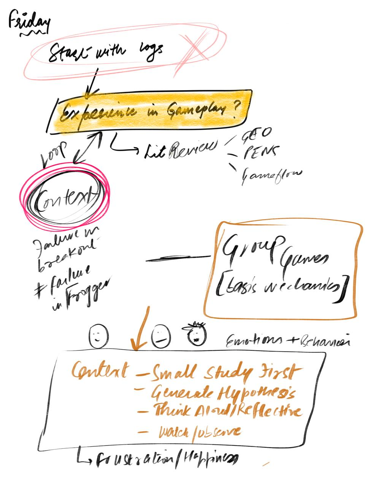
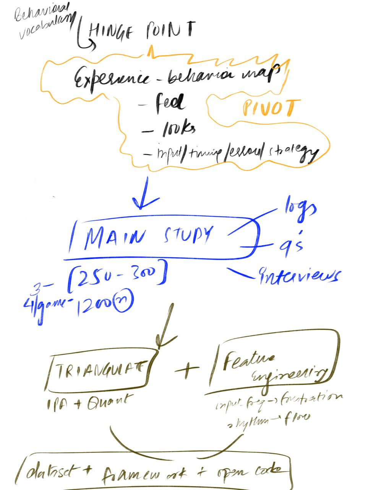
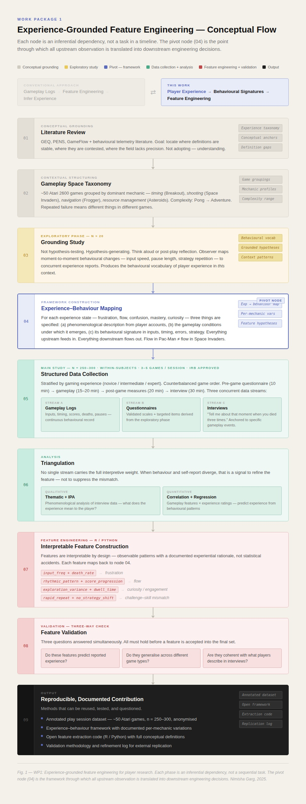

You cannot measure something properly if you do not first understand it. Gameplay data is neat and precise — every button press, every death, every pause can be recorded. Player experience does not show up so cleanly. It appears indirectly, in patterns. This is why the approach to WP1 is intentionally inverted.


Two pages of initial thinking, drawn on a Friday. The crossed-out "start with logs" is not decorative — it was the first instinct, rejected before anything else was written.
The diagram below traces the logical sequence of this approach as a chain of inferential dependencies — each phase exists because the one before it leaves something unresolved. The flow can be read as a set of nested questions: what are we trying to understand, what does that look like in practice, how do we observe it systematically, how do we translate observation into features, and how do we know those features hold. Each answer generates the conditions for the next.
Instead of starting with gameplay logs and extracting as many features as possible, the approach starts with player experience as a whole — works backward to behaviour — and only then moves forward to feature engineering. Correlation without understanding is fragile. A feature that predicts frustration in one game context but not another is not a feature; it is a coincidence. Grounding the work in observed experience first is what gives the engineered features their interpretive stability.
